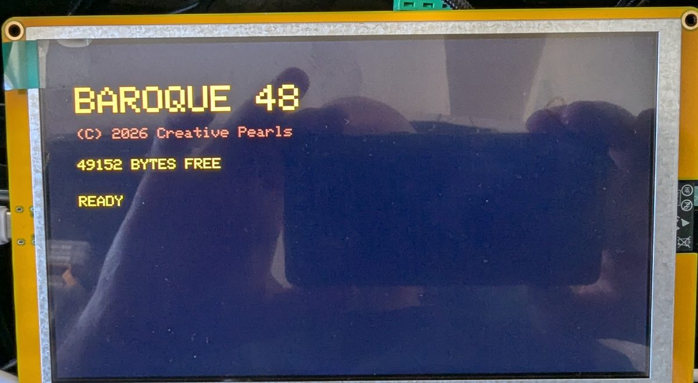
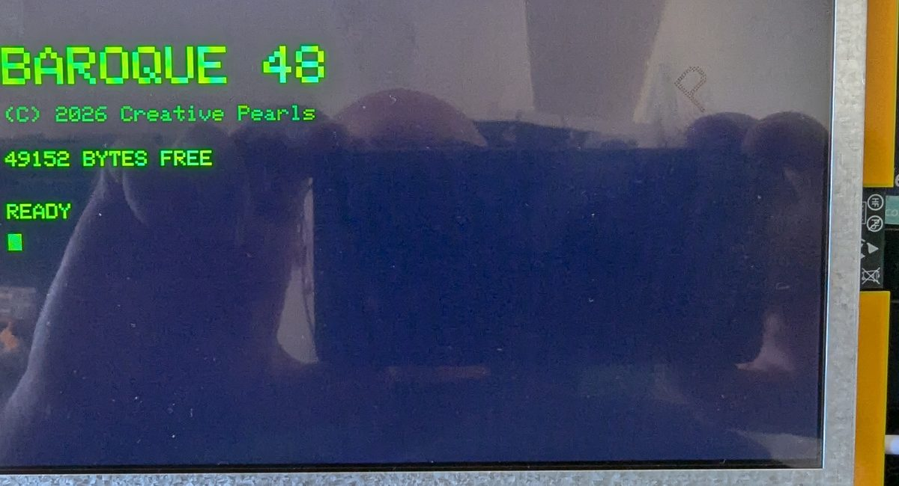
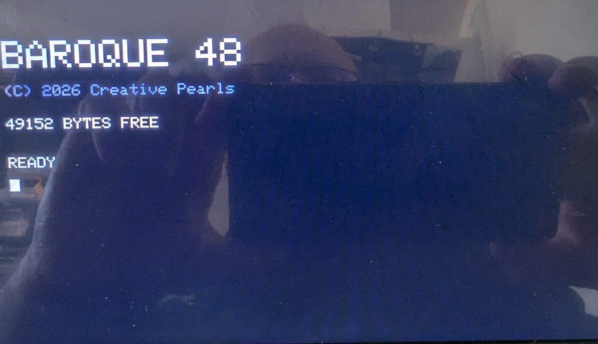

BAROQUE 48(C) 2026 Creative Pearls 49152 BYTES FREE READY
A gépen ez egy parancs: MODE GREEN. A fényporok az igaziak — P3 borostyán, P1 zöld, P4 fehér.
Kipróbálhatod most, itt a böngészőben. Nem videó a gépről: ugyanaz a DOS, ugyanaz a BASIC, ugyanaz a lemez — és hogy ugyanazt válaszolja-e, mint a vas, azt nem állítjuk, hanem mérjük: 465 sor, mind egyezik.
Mi ez
Egy kis számítógép, amely BASIC-be indul, a programjait kézbe vehető floppykon tartja, és magnó módjára sivít, amikor betölti őket. Saját DOS-szerű héja és fájlkezelője van — a miénk, ehhez a géphez írva, nem másé utánozva.
ESP32-S3-on fut, 7 colos 800×480-as panellel, 16 MB flashsel és 8 MB PSRAM-mal.
Miért 48
A gépben 8 MB memória van. Ebből a BASIC 49 152 bájtot kap.
Ez nem nosztalgia és nem vicc. Ez ígéret: amit itt írsz, elfér egy igazi 48K-s gépen. A szám a névben kompatibilitási garancia — és ezért a korlát maga a termék, nem hiány.
A boot-képernyőn álló szám mért, nem nyomtatott: a gép változó mintát ír a munkaterület minden bájtjára, visszaolvassa, és megszámolja a jókat. Ha egy bájt rossz volna, kisebb szám állna ott.
A bőség a darabszámba megy, soha nem abba, hogy egy program mekkora. Nem a memória tanított azokon a gépeken — hanem hogy egy gyerek kilistázhatott egy játékot és átírhatta. Egy négymegabájtos játékot senki nem listáz ki.
Igazi vason
TAPE,
és a gép elmenti magát magnóra: öt másodperc vezetőhang, egy rövid recsegés (a fejléc,
benne a név), egy másodperc csend, aztán a sűrű sivítás — maga az adat.
Hangos: a kutyánk kimenekült tőle a teraszra.


Hol tartunk
Működik, megmérve, a mérőpadon:
- a saját DOS-szerű parancssor —
DIR,COPY,TYPE,CHKDSK,FORMAT, és egy valódi 9,9 MB-osC:meghajtó - a BAROQUE BASIC —
PRINT,IF,FOR/NEXT,GOSUB,INPUT, szöveges változók, szövegfüggvények - programok mentése lemezre — és sima szövegként,
úgyhogy a parancssor
TYPE-ja is elolvassa őket - az indulási képernyő, igazi 7 colos panelon
- három fénypor-mód, kapcsolhatóan
- a 48 K-s munkaterület, bájtonként ellenőrizve bekapcsoláskor
- a magnó-hang — a kísérlet, ami eldöntötte a projektet: igazi ZX Spectrum-impulzusok, mikrofonnal visszamérve — 807 Hz-es vezetőhang, 2047 Hz-es nulla bit, egy ezreléken belül
És két kézikönyv — bennük minden képernyősor a gép valódi válasza, egyetlen példa sincs begépelve:
BAROQUE‑DOS Kézikönyv · BBASIC Kézikönyv · Próbáld ki a böngészőben
Még nincs meg — és ez a java:
- hogy egy igazi ZX Spectrum betölti-e ezt a hangot — ez a következő kísérlet
- a floppyk, a doboz, a billentyűzet
Ez a lap azért van, mert száz ember mondta, hogy akar egyet, mielőtt egyetlen sora megíródott volna. Tisztességesnek tűnt megmutatni nekik, pontosan hol tartunk.
Szólj, ha
Nincs lista, nincs hírlevél, nincs nyomkövetés — ez a lap semmit nem küld sehova. Ha tudni akarod, mikor rendelhető a BAROQUE 48, írj egy sort: